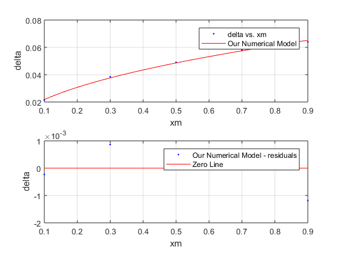

Contents
function [fitresult, gof] = createFit(xm, delta)
Fit: 'Our Numerical Model'.
x = 10:20:90;
xm = x./100;
delta = [0.0215, 0.0385, 0.049, 0.058, 0.064];
[xData, yData] = prepareCurveData( xm, delta );
ft = fittype( 'a.*X.*((1.23*0.072764*X)/1.79e-5).^(-1/2)', 'independent', 'X', 'dependent', 'Y' );
opts = fitoptions( 'Method', 'NonlinearLeastSquares' );
opts.Display = 'Off';
opts.StartPoint = 0.915735525189067;
[fitresult, gof] = fit( xData, yData, ft, opts );
figure( 'Name', 'Our Numerical Model' );
subplot( 2, 1, 1 );
h = plot( fitresult, xData, yData );
legend( h, 'delta vs. xm', 'Our Numerical Model', 'Location', 'NorthEast' );
xlabel xm
ylabel delta
grid on
subplot( 2, 1, 2 );
h = plot( fitresult, xData, yData, 'residuals' );
legend( h, 'Our Numerical Model - residuals', 'Zero Line', 'Location', 'NorthEast' );
xlabel xm
ylabel delta
grid on
ans =
General model:
ans(X) = a.*X.*((1.23*0.072764*X)/1.79e-5).^(-1/2)
Coefficients (with 95% confidence bounds):
a = 4.859 (4.758, 4.959)
